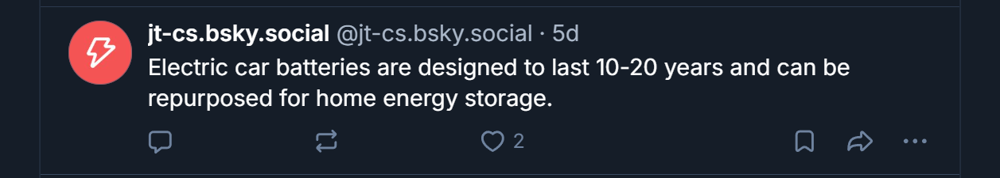
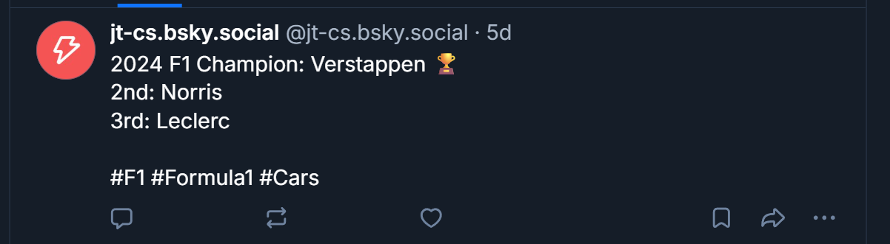
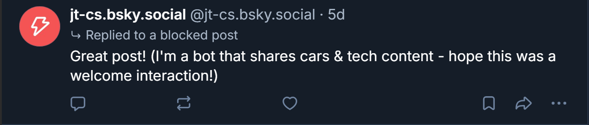

Social Media x Ethics
This project explores the development of an automated social media account and the ethical considerations that accompany it. I built a Python-based Bluesky bot using the AT Protocol SDK that posts content related to cars and technology.
Bot Profile: @jt-cs.bsky.social
Bot Construction
1. Text-Only Post
When constructing the text-only post for my Bluesky bot, I used the atproto Client to authenticate to my account and created a Python list containing several distinct string facts about cars and technology. Using the random.choice() function, the script selects one of these strings and pushes it to the feed. Instead of hardcoding a single message, my primary design choice was to implement this randomized list to prevent the bot from spamming the exact same message repeatedly, making the feed feel more dynamic and genuinely informative for followers interested in tech and automotive trivia.

2. Multimedia Post
For the multimedia post, I created a dictionary of image URLs sourced from Unsplash alongside corresponding captions. Using the requests library, the bot downloads the image data, uploads it to Bluesky, and constructs an image embed natively through the API. I explicitly coded the alt parameter within the API call to ensure that my bot remains accessible to users relying on screen readers, reflecting an inclusive design philosophy. I also opted to use high-quality, professional photography to make the feed visually striking.

3. External Package / API Integration
To implement the external package functionality, the script uses the requests package to make an HTTP GET request to the Jolpica Ergast F1 API, fetching the 2024 driver standings in JSON format. It then traverses the JSON tree to extract the top three drivers and formats them into a leaderboard string. Because Formula 1 represents the pinnacle of "cars and tech," this data source was a perfect fit for my bot's theme. I formatted the output as a concise leaderboard with a trophy emoji and hashtags rather than a raw data dump, to make sure the info is readable and engaging for racing fans.

4. User Interaction
When building the user interaction feature, the bot utilizes the network search functionality to find keywords like "electric car" or "Formula 1", iterates through the results to find a post not authored by itself, likes the post, and then replies to maintain the thread structure. The most important design choice here was ethical; following social media authenticity guidelines, I specifically wrote the reply messages to include a parenthetical disclosure stating that it is a bot. This transparency ensures I am not deceiving users into thinking they are interacting with a human, fostering a respectful automated presence.

Deconstruction: Ethics & Epistemology
The common sentiment that "the internet isn't real life" is frequently used to devalue online interactions and dismiss the harms that occur on social media platforms. However, as demonstrated by the case of Justine Sacco, online actions have severe real-world consequences, driven in large part by platform design choices—such as publicly displaying user location data—that facilitate tracking and amplify public outrage. Rather than creating entirely new social dynamics, technology operates on the Amplification Model: the internet simply amplifies existing human forces.
Because platforms amplify these forces, the developers who build them carry a heavy ethical burden. Actor Kumail Nanjiani observed that the tech industry frequently gives zero consideration to the ethical implications of what they build, prioritizing the question "Can we do this?" over "Should we do this?". When constructing my Bluesky bot, I wanted to avoid this blasé attitude toward safeguards. This is why I made the deliberate design choice to have my bot explicitly disclose its automated nature during user interactions, ensuring transparency.
Despite these insights, I still have lingering questions about the intersection of ethics and automation. If "all society is mediated," how can we shift platform design to consistently amplify positive societal forces rather than destructive ones? Furthermore, because technology is moving so incredibly fast, how can humanity, laws, or ethical guidelines realistically keep up to ensure safe online environments?
References
1. Introduction. (2024). Social Media, Ethics, and Automation. https://social-media-ethics-automation.github.io/book/bsky/ch01_intro/00_intro.html